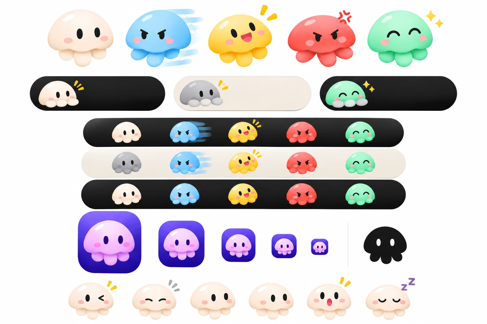
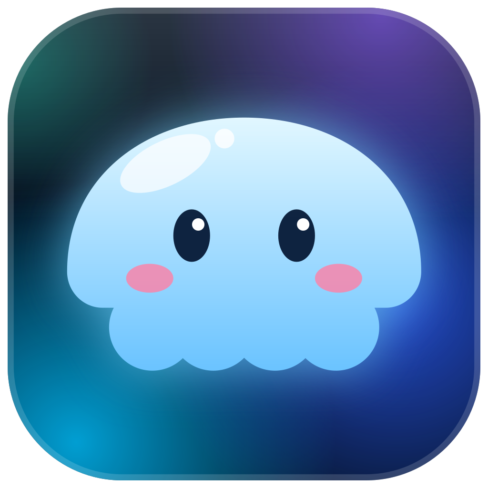
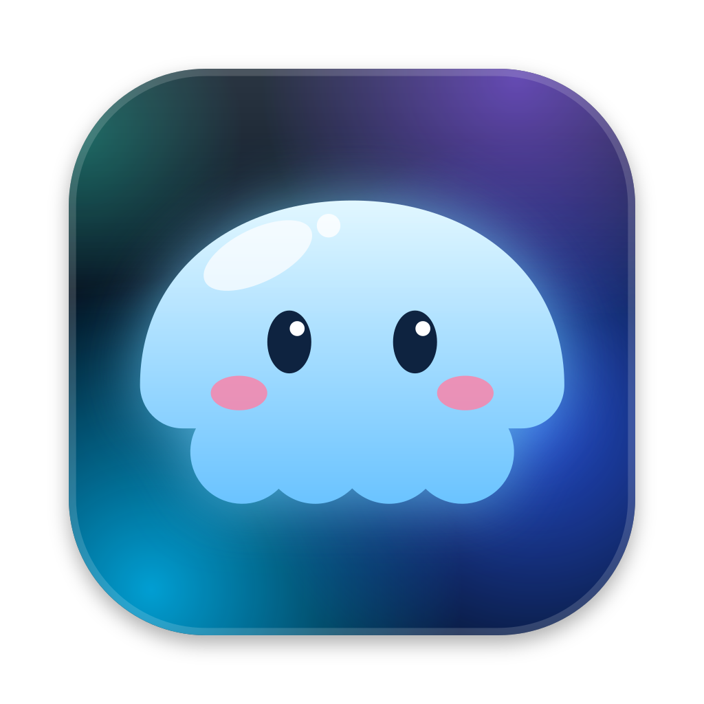

照 GPT 生成的那一套画成 SVG，每个都是真动画，不要光环。这一版按上次列的问题改过：运行中不再皱眉、按下改回闭眼不压扁、只有「在跑」和「等你」一直循环、时长对齐到 120 / 160 / 240 / 420ms 四档、补了可能中断和压缩上下文两个状态、加了能切换状态的互动台、图标试过把水母换成米白，最后选定蓝色那版。

左边是放大的，右边是岛上实际大小（24 像素高）。切换状态时颜色 240ms 渐变、表情和道具 160ms 淡入淡出、姿态 240ms 转过去。
把鼠标移过来试试。
对应代码里的 idle、running、waiting、failed、completed、stale，加上压缩上下文。标「一直循环」的只有表示正在进行的三个；其余进场播一次就停。预览里只播一次的会自动重播，可以在上面关掉。
实际大小是 24 像素高。小尺寸去掉残影和高光小点，道具线条加粗。浅色岛上空闲换成暖米色加一圈描边，不再用灰色，灰色留给「可能中断」。
交互时用，颜色跟当时的状态走，这里都用空闲的米白。眨眼、看左右、按下在真岛上跟着鼠标走，这里循环播放只是为了看清。
第一版只做下面四个：它们不靠道具，24 像素也看得出来，触发信号也现成。
选定：深海背景配蓝色水母。试过把水母换成岛上空闲时的米白（收在下面），没有采用。选蓝色要知道两件事：图标里的蓝和岛上「运行中」的蓝是同一个色系，岛上空闲时是米白，两处的水母颜色不一样；深色炫彩底上的蓝色圆团和 MagIsland 的图标接近，定稿重画时靠触手的波浪边、腮红和黑眼睛拉开。
「真实像素」是把图标按 16、32 像素真的画出来再放大 6 倍，能看到 Windows 任务栏 100% 缩放下每个像素的样子。
放在桌面壁纸上：
Mac 菜单栏的单色模板图（18 像素高），形状和选定的图标一致：
矢量定稿（2026-11-20）。文件在 docs/assets/logo/，规格写在 docs/design/logo.md。头和四瓣触手合成了一条轮廓，图标和菜单栏模板图都用它；岛上的分层母版保留头和四个圆，方便触手各自动。



data-paused）。src-tauri/icons/ 的全部尺寸、换掉 Rust 画的菜单栏模板图和 README 里的图，要换的位置列在 docs/design/logo.md「还没替换的地方」。